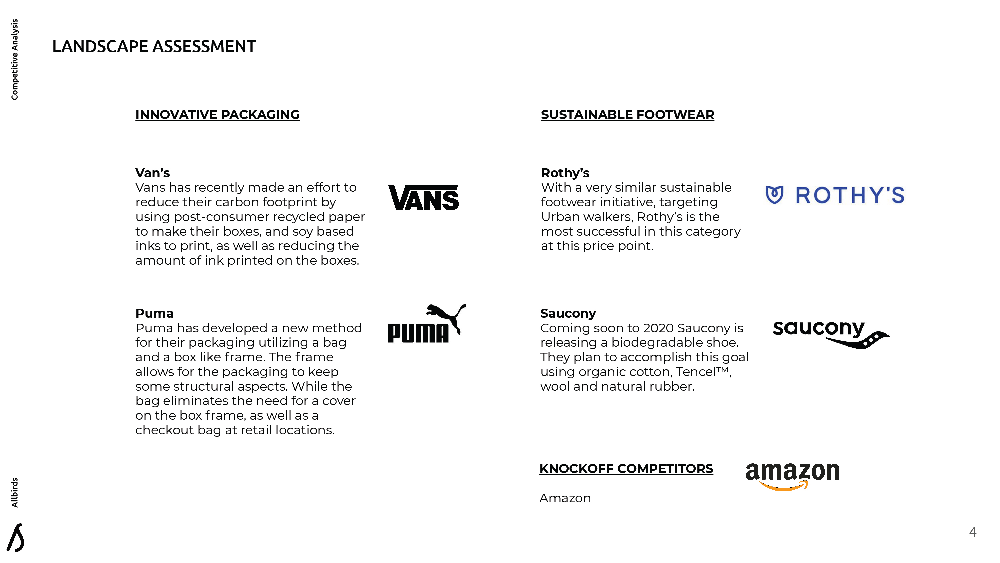
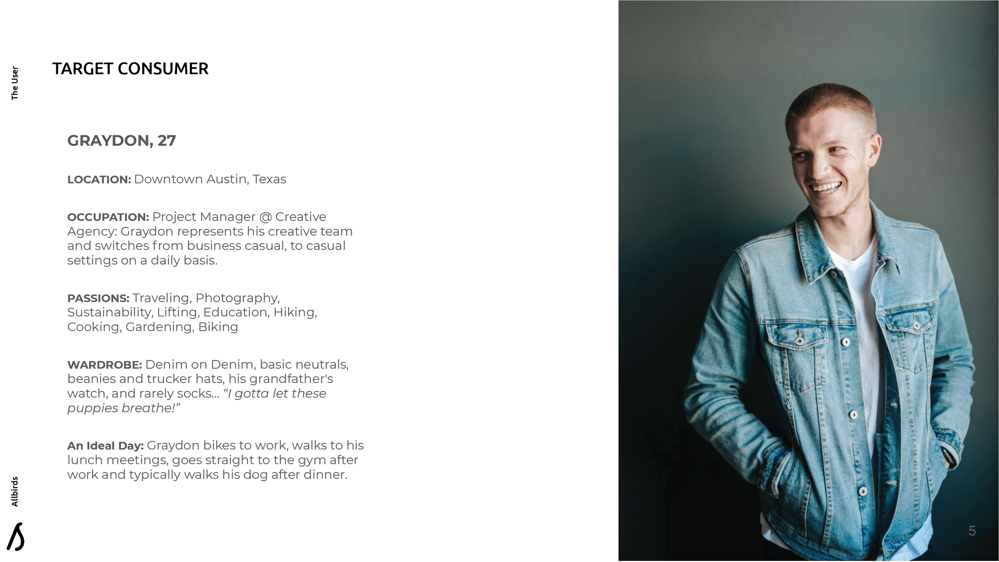
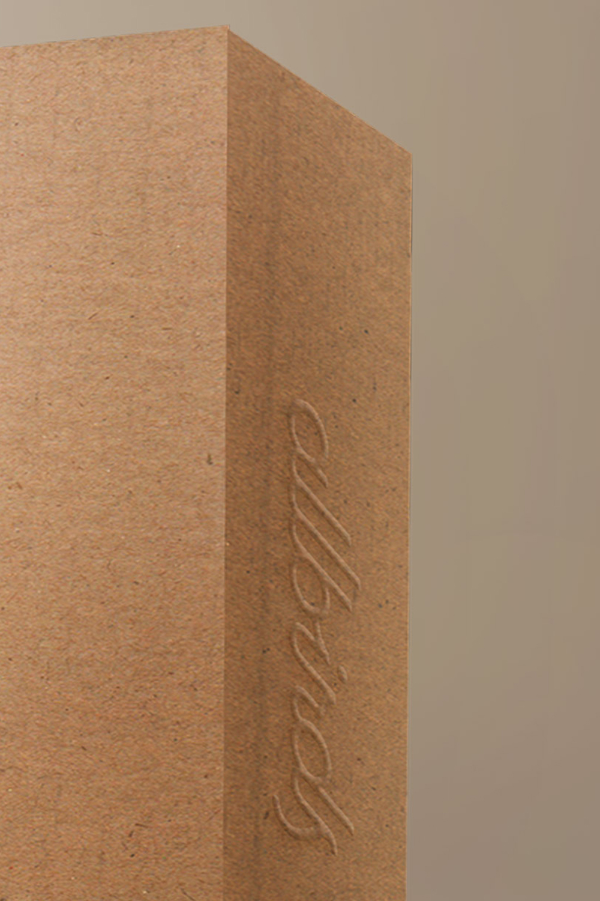
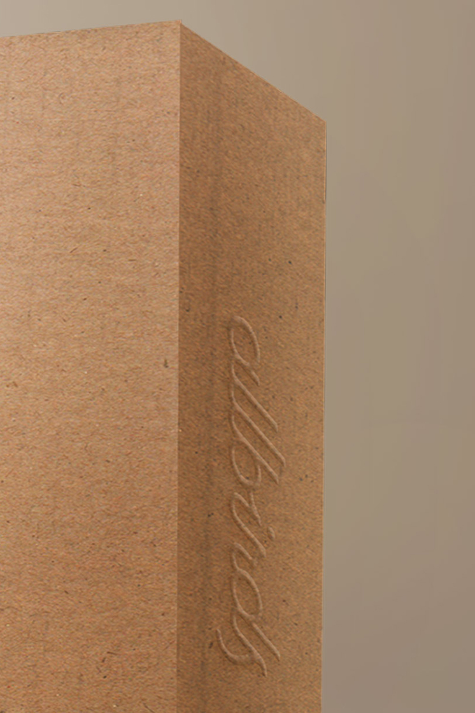
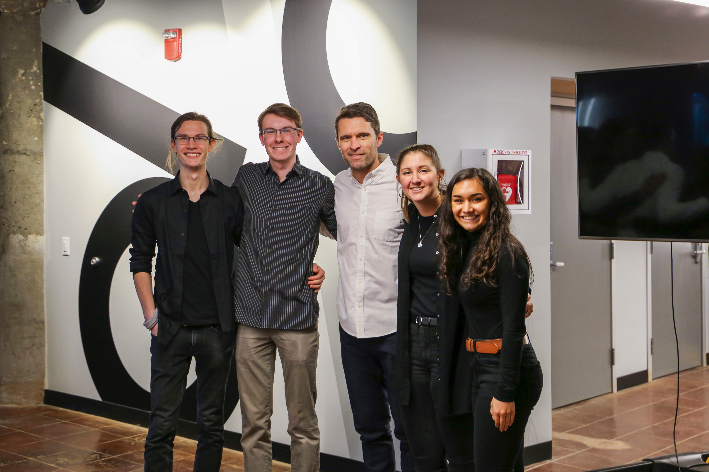

üëü Allbirds Packaging Competition
Students from all majors and years were encouraged to apply to the
1819
Innovation hub
for an
opportunity to present
two redesigns of the Allbirds shoe packaging to Tim Brown, the CEO.
With only a week to put in as much work as we could,
we were voted both Audience Choice and Runner Up, and awarded
a $400 prize and a brand new pair of shoes.
We applied the same logic to the current state of Allbirds packaging, as when Tim Brown speaks of his shoe design. Innovation for such a sustainable brand should be about taking things away, while adding value to the brand.
 
We began by analyzing the theory behind Allbirds current packaging, combined with
testing multiple design iterations
through prototyping, we came up with two solutions for new sustainable package methods.
Our designs incorporated all the success of the current packaging while enhancing the consumer unboxing
experience and
requiring less material in their construction.
The Solution of Today
With a more traditional box approach we wanted to focus on the sensory appeal of the unboxing. When you open
the box, the shoes fall in line as if they were walking already, underneath the shoes you reveal brand
messaging, and we wanted to create a box you would want to keep your shoes in.
The box approach was to some extent serendipitous, we destroyed the current show box and discovered the
beauty of the curves, and thought – what can we do with this?
 


In a manufacturing environment, only 2% of the total material is wasted.
We didn't have statistics on the waste from the current packaging,
but we're fairly certain this was a significant improvement.
The Solution of Tomorrow
Obviously, the most sustainable form of packaging is no packaging. So that's where we began. From the get go, we knew that we wanted a package that looked cohesive on shelf, was as eye catching as the pattern currently created by the boxes, and was ergonomically pleasing to pull off the shelf.


In addition to simply being more sustainable by using less material, the reduced footprint observes lower shipping costs as each package weighs less and more boxes can be shipped per container.
That's us with Tim Brown! So proud :')